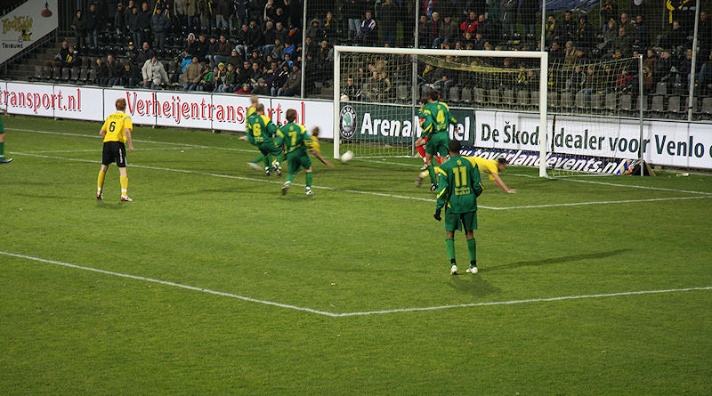

Verplichte combi voor de Fortunafans. In de binnenstad was er ruim voor de
wedstrijd een vriendschappelijke ontmoeting tussen supporters
van beide clubs.
Cookie Voorn, Fortuna-icoon en huidig hulpje van bondscoach Bert van Marwijk
heeft een kaartje gescoord.
De opgeleukte ingang van het Seacon-stadion.
De catering in Venlo is goed, snel en duur. Een biertje van 0.4l kost 3,60
euro, een frikandel 1,75 euro.

In deze wedstrijd veel ex-Rodaspelers zoals Charlie van den Ouweland tijdens
de warming-up van Fortuna.
De grasmat van VVV bestaat voor 10% uit kunstvezel.
Dit kan zomaar de laatste wedstrijd van Fortuna Sittard in Venlo worden.
Mooi doek, maar het begint een beetje te vervelen.
AVE VVV
Het gastenvak was matig bezet en tamelijk stilletjes. Nadat deze foto is
genomen arriveerden nog enkele tientallen Fortunasupporters. De
wedstrijd was toen al aan de gang.
In de basis de ex-Rodaspelers Van Kouwen en Leemans. Van Dessel en Begois
hoefden niet aan te treden. Scheids is Haverkort....
Gedurende de eerste 20-25 minuten werd Fortuna compleet zoek gespeeld. VVV
kreeg een dozijn corners maar haalde daar geen enkel
rendement uit.
Geel voor Van Kouwen.

Honda kopt een voorzet van Schaken binnen: 1-0, (42').
Even later scoort de Japanner opnieuw; de bal gaat erin via het lichaam van
Fortunees Kozarac: 2-0, (45').
De lange trap op naar het VVV-home om te ontdooien.
De tweede helft was voornamelijk saai.
Een van de spaarzame kansen van Fortuna.
Het bedankje van de VVV-spelers aan het inmiddels halflege stadion. Het
bedankje van de Fortunaspelers is nog veel pijnlijker omdat er op
dat moment nog maar tien fans in het gastenvak verblijven.
VVV zit op ramkoers voor het kampioenschap en Fortuna
vertoeft zoals de laatste jaren gewoon in de kelder. Los daarvan bevindt de
club
uit Sittard zich in de oncomfortabele situatie dat er gekozen dreigt te
moeten worden tussen een faillissement of een adoptie door Roda JC.
Er breken nog roerige tijden aan in het betaald voetbal
in Limburg, zoveel is zeker!